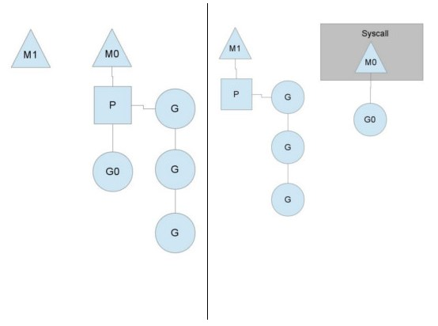

Go Groutine
文章目录
并发与并行
- 并行(parallel): 指在同一时刻,有多条指令在多个处理器上同时执行(靠机器)
- 并发(concurrency): 指在同一时刻只能有一条指令执行,但多个进程指令被快速的轮换执行,宏观看起来是并行的,微观是cpu在不断的快速切换.(操作系统)
线程安全问题
- 协作式调度: 当线程终止或阻塞是发生调度 => “主动让出”
- 抢占式调度: 允许逻辑上将可继续运行的线程在运行过程中暂停的调度方式 => “被迫让出”
- 脏数据原因: 抢占式调度被迫让出cpu控制权,一个行为可能有多个指令组合而成 多指令在执行过程中被中断,导致未执行完整出现脏数据.
- 举例:
- i= 0, 线程1 执行 i++,线程 2 也执行 i++, 想要的结果是2
- 当程序 1 将 i 值读取出来并运算后改为写入的时候,系统抢占式把控制权给个程序 2
- 程序 2 完整的执行完了 i++,随后系统将控制权交回给程序 1,此时的程序 1 并不知道自己被打断了,也不知道 i 已经被修改,还把之前计算好的值写入,最后把之前的2给覆盖了结果变成了1.
- 被打断是因为抢占式使用时间到了后被迫交还cpu
- 值篡改是因为读取i和写入i是两个指令不是一个原子操作
Coroutine(协程)特点
一种用户态的轻量级线程 - 轻量级线程(由于线程创建时需要向操作系统申请资源,并且在销毁时将资源归还,因此它的创建和销毁的开销比较大,内存消耗更低,一般是2kb vs 1mb) - 是语言层面的任务,非系统级别的(由语言层面虚拟机或者go runtime等 进行创建),切换更高效 - 多个协程可能在一个或多个线程上运行.依靠调度器分配 - 协作式: 非抢占式(协作)在关键时刻(阻塞,任务完成等)将cpu让给其他线程 - 同一线程上的多个协程的切换是无线程安全问题的
Goroutine
- 概念: goroutine是go语言中的协程
如何使用: go test() 在函数前加go关键字 就可以以新协程来启动test()函数 为什么说协程无线程安全问题: 协程是协作式本身无线程安全问题,但go runtime的scheduler会将多个goroutine分配到不同线程,才会出问题
1 2 3 4 5 6 7 8 9 10 11 12 13 14 15 16 17 18 19 20 21 22 23 24 25var s int func test() { for i := 0; i < 10000; i++ { s++ } } func main() { runtime.GOMAXPROCS(1) //这里可以暂时先暂时理解为一个限定只用一个线程 var wg sync.WaitGroup //用于等待所有协程都完成 wg.Add(2) go func() { defer wg.Done() //程序退出的时候执行 test() }() go func() { defer wg.Done() //程序退出的时候执行 test() }() wg.Wait() //等待所有协程的完成 fmt.Println(s) }
调度器(Scheduler)
高级语言对内核线程的封装实现通常有三种线程调度模型: - N:1模型.N个用户空间线程在1个内核空间线程上运行,优势是上下文切换非常快但无法利用多核系统的优点. - 1:1模型.1个内核空间线程运行一个用户空间线程,充分利用了多核系统的优势但上下文切换非常慢,因为每一次调度都会在用户态和内核态之间切换. - M:N模型.每个用户线程对应多个内核空间线程,同时也可以一个内核空间线程对应多个用户空间线程,使用任意个内核模型管理任意个goroutine,但缺点是调度的复杂性 - go 使用的是第三种模型,Scheduler调度器公平高效合理的将goroutine分配到相应的线程上

- M: 操作系统的内核空间线程
- G: goroutine对象
- P: 代表调度的上下文,可以把它看做一个局部的调度器,使go代码在一个线程上跑,它是实现从N:1到N:M映射的关键,一般256个

当执行 go test() 会发生什么？ - go test() ; go test() 创建2个 goroutine
|
|
加入队列
- Scheduler检查空闲的P放入它的local queue等待被调用
- 无空闲 则加入到global queue 等待空闲后的P来拿取
因为goroutine需要依赖线程,也就是M,且M与P 1: 1的关系.
- M不断的loop执行goroutine,执行完 取下一个
- 当local queue中的groutine执行完成,没有了,就去global拿取
- 当发现global也没了,就去找其他P 偷取(work stealing),偷取数量为P localqueue数量的一半(为了平均分配任务)
- 偷取也没有的话,最终进入sleep状态,等待再次被唤醒
当M执行某一个goroutine时候如果发生了阻塞操作,M会阻塞,如果当前localqueue有一些可运行的G,Scheduler会把这个线程M从P中摘除(detach),然后再创建一个新的操作系统的线程(如果有空闲的线程可用就复用空闲线程)来服务于这个P
1 2 3 4 5 6 7 8 9 10 11 12 13 14 15 16 17 18 19 20 21func hello() { defer wg.Done() fmt.Println("a") time.Sleep(time.Second * 4) fmt.Println("b") } func hello2() { defer wg.Done() fmt.Println("c") time.Sleep(time.Second * 4) fmt.Println("d") } func main() { runtime.GOMAXPROCS(1) //限制只有一个P wg.Add(2) go hello() go hello2() wg.Wait() }刚才摘除P后的M 运行完成阻塞的goroutine后怎么办？他会继续第3步骤里的事情,拿别人的东西
sysmon(monitor):此线程在go程序启动后创建,用来监控goroutine,做抢占式调用,只列出了goroutine相关,其实还有其他很多功能
- 向长时间运行的G任务发出抢占调度；
- 收回因syscall长时间阻塞的P
一旦G的抢占标志位被设为true,那么待G下一次调用函数或方法时,runtime便可以将G抢占
Go运行时系统并没有内核调度器的中断能力(只有系统有),它只能通过向运行时间过长的G中设置抢占flag的方法温柔的让运行的G自己主动让出M的执行权,这里也说明了即使是抢占了但也不会出现线程不安全,因为他不是被突然中断的,而是执行完检测到flag再中断的.
总结
- go scheduler 公平高效合理的分配goroutine
- goroutine不会有线程安全问题,但go使用了M:N模型,所以也需要关注线程安全问题.